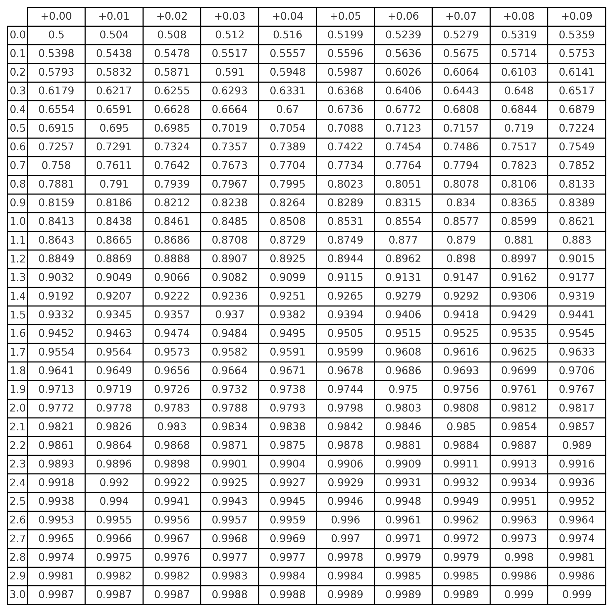
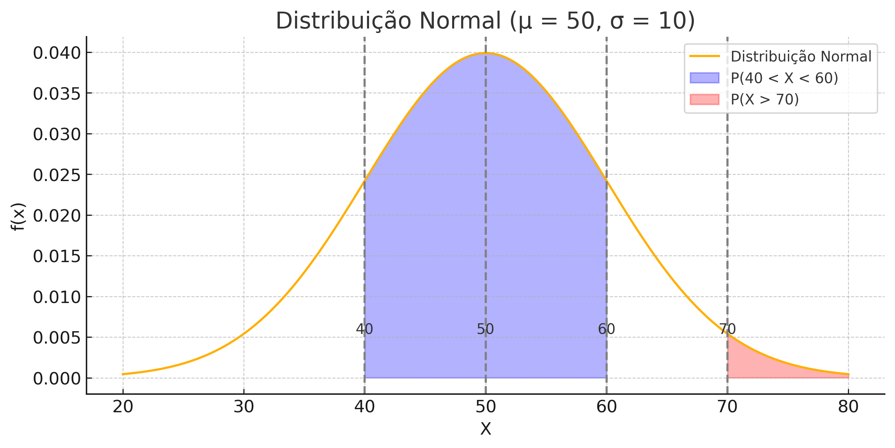

🎓📊 The Normal Distribution — Part 2: z-Score and z-Table
← Normal Distribution Index · ← Statistics Courses · ← Statistics Section

1 🎓📊 The Normal Distribution — Part 2
In this section, we focus on standardization (z-score), reading the z-table, and applications to compare performances, interpret probabilities, and prepare the ground for inference.
📌 Objectives - Standardize \(X\) via \(Z=\frac{X-\mu}{\sigma}\) and interpret the z-score. - Obtain probabilities from the z-table and via software (R/Python). - Compare performances across different scales using \(z\). - Prepare for the use of percentiles and the inverse normal.
1.1 🧠 📖 Solved Exercises and Result Analysis
Situation: Suppose IQ scores follow a normal distribution with parameters:
- \(\mu = 100\) (mean)
- \(\sigma = 16\) (standard deviation)
Question: What is the probability that a person has an IQ greater than 136?
Instructions: 1. Compute the z-score corresponding to \(x=136\). 2. Use the z-table or software to determine \(P(Z>z)\). 3. Interpret the result: is this score common or rare?
💡 Hint: \[ \boxed{\,z=\tfrac{x-\mu}{\sigma}\,}, \quad \boxed{\,P(Z>z)=1-P(Z<z)\,} \]
Distribution: \(X \sim \mathcal N(100,\,16^2)\)
🧮 Step 1 — z-Score
\[ z = \frac{136-100}{16} = \frac{36}{16} = 2.25 \]
🧮 Step 2 — Lookup in the z-table
\[ P(Z<2.25) \approx 0.9878 \quad\Rightarrow\quad P(Z>2.25) = 1 - 0.9878 = 0.0122 \]
📌 Conclusion
Only about \(\mathbf{1.22\%}\) of the population has an IQ above 136. That is, it is a rare result, typical of individuals in the upper tail of the distribution.
1.2 📏 Comparing Performances with the z-Score
Initial situation:
- Student A scored 80 on a test with \(\mu=70,\; \sigma=5\).
- Student B scored 8 on a test with \(\mu=6,\; \sigma=1\).
Calculation of z-scores:
\[ z_A = \frac{80-70}{5} = 2.0 \qquad z_B = \frac{8-6}{1} = 2.0 \]
📌 Conclusion: Both students performed 2 standard deviations above the mean of their classes. In other words, their relative performance was equivalent.
Situation:
- Student A scored 65 on a test with \(\mu=60,\; \sigma=4\).
- Student B scored 7 on a test with \(\mu=5.5,\; \sigma=1\).
Task: 1. Calculate the z-score for both students. 2. Compare the values. 3. Interpret: which one stood out more relative to their class average?
💡 Hint: the larger the \(z\), the better the relative performance.
Student A:
\[ z_A = \frac{65-60}{4} = \frac{5}{4} = 1.25 \]
Student B:
\[ z_B = \frac{7-5.5}{1} = \frac{1.5}{1} = 1.5 \]
📌 Conclusion: Student B obtained \(z_B=1.5\), greater than \(z_A=1.25\). Therefore, Student B showed better relative performance compared to their class.
- Normal Distribution:
\[ \boxed{\, f(x)=\tfrac{1}{\sqrt{2 \pi \sigma^2}} \, e^{-\tfrac{(x-\mu)^2}{2 \sigma^2}} \,} \]
- Standard Normal Distribution (\(\mu=0,\; \sigma=1\)):
\[ \boxed{\, f(z)=\tfrac{1}{\sqrt{2 \pi}} \, e^{-z^2/2} \,} \]
- z-Score (standardization):
\[ \boxed{\, z=\tfrac{x-\mu}{\sigma} \,} \]
- Original value from \(z\):
\[ \boxed{\, x=\mu+z\sigma \,} \]
- Empirical Rule (68–95–99.7):
- \(68\%\): between \(\mu \pm 1\sigma\)
- \(95\%\): between \(\mu \pm 2\sigma\)
- \(99.7\%\): between \(\mu \pm 3\sigma\)
1.3 📊 z-Table — Standard Normal Distribution
How to use the z-table: - The row gives the integer part and the first decimal place of the z-score. - The column gives the second decimal place. - The intersection provides \(P(Z<z)\), i.e., the cumulative probability up to \(z\).
| z | 0.00 | 0.01 | 0.02 | 0.03 | 0.04 | 0.05 |
|---|---|---|---|---|---|---|
| 1.2 | 0.8849 | 0.8869 | 0.8888 | 0.8907 | 0.8925 | 0.8944 |
🧠 Example: For \(z=1.25\), we use row 1.2 and column 0.05, obtaining: \[ P(Z<1.25)=0.8944 \]
1.4 📊 Cumulative z-Table — Standard Normal \([P(Z<z)]\)

Source: generated with
scipy.stats.norm.cdffor \(z\) values between 0.00 and 3.09.
Objective: apply the concepts of normal distribution and z-score in a computational environment.
In Excel:
=NORM.DIST(120,100,16,TRUE)→ computes \(P(X<120)\).=NORM.INV(0.90,100,16)→ returns the value corresponding to the 90th percentile.- Create a table with values of \(x\), compute z-scores, and highlight who is above the mean.
In R:
pnorm(120, mean=100, sd=16)→ returns \(P(X<120)\).qnorm(0.90, mean=100, sd=16)→ returns the 90th percentile value.z <- (x - mean)/sd→ computes z-scores of a vector.
💡 Suggestion: compare students from different classes (with different means and standard deviations) using the z-score.
Situation: Service time (in minutes) in a facility follows \(X \sim \mathcal N(50, 10^2)\).
Task:
- Mark on the graph the regions corresponding to:
- \(P(40<X<60)\)
- \(P(X>70)\)
- Compute the z-scores corresponding to 40, 60, and 70.
- Use Excel or R to calculate the probabilities of these regions.
- Interpret: are these service times common or rare?
💡 Hint: use the empirical rule and the symmetry of the curve as visual support.

The curve shows the distribution \(X \sim \mathcal N(50, 10^2)\). The shaded areas represent: Blue: \(P(40<X<60)\), Red: \(P(X>70)\).
Distribution: \(X \sim \mathcal N(50, 10^2)\)
z-Scores: \[ z_{40} = \frac{40-50}{10} = -1, \quad z_{60} = \frac{60-50}{10} = 1, \quad z_{70} = \frac{70-50}{10} = 2 \]
Probabilities:
- \(P(40<X<60) = P(-1<Z<1) \approx 0.6826\)
- \(P(X>70) = P(Z>2) = 1-P(Z<2) \approx 0.0228\)
📌 Interpretation: - About \(\mathbf{68.26\%}\) of service times last between 40 and 60 minutes. - Only \(\mathbf{2.28\%}\) last more than 70 minutes → they are rare.
Distribution: \(X \sim \mathcal N(50, 10^2)\)
In Excel:
- \(P(40<X<60)\):
=NORM.DIST(60,50,10,TRUE) - NORM.DIST(40,50,10,TRUE)→ \(\approx 0.6826\) - \(P(X>70)\):
=1 - NORM.DIST(70,50,10,TRUE)→ \(\approx 0.0228\)
In R:
\(P(40<X<60)\):
pnorm(60, mean=50, sd=10) - pnorm(40, mean=50, sd=10)\(P(X>70)\):
1 - pnorm(70, mean=50, sd=10)
Approximate results: \(P(40<X<60) \approx 68.26\%\), \(P(X>70) \approx 2.28\%\).
1.5 Importance of the Normal Distribution in Statistics
The normal distribution is more than just a pretty curve: it is fundamental in applied statistics.
Many inferential methods rely on normality:
- Hypothesis tests (z-test, t-test)
- Construction of confidence intervals
- Linear regression analysis
- Approximations for sampling distributions
Understanding the normal distribution is the first step toward mastering statistical inference!
1.6 📌 Conclusion of Part 2: z-Score and z-Table
Part 2 of the course explored the practical use of the normal distribution and the z-score:
- Comparing performances
- Graphical and computational interpretation of probabilities
- Foundation for future studies in statistical inference
2 📚 References
- Schmuller, Joseph. Statistical Analysis with Excel® For Dummies®, 5th ed. Wiley, 2016.
- Schmuller, Joseph. Statistical Analysis with R For Dummies® (Portuguese edition), 2nd ed. Alta Books, 2021.
- Levine, D. M.; Stephan, D.; Szabat, K. A. Statistics for Managers Using Microsoft Excel, 8th ed. Pearson, 2017.
- Morettin, L. G. Estatística Básica: Probabilidade e Inferência, 7th ed. Pearson, 2017.
- Morettin, P. A.; Bussab, W. O. Estatística Básica, 10th ed. SaraivaUni, 2023.
3 🔗 Quick Access to Course Parts
🎯 Part 1: Introduction to the Normal Distribution
🎯 Part 2: z-Score and z-Table (👉 you are here!)
🎯 Part 3: Graphs, CLT, and Approximate Normality
← Normal Distribution Index · ← Statistics Courses · ← Statistics Section
Blog do Marcellini — Exploring Statistics with Rigor and Beauty.
📌 Created by Blog do Marcellini with ❤️ and code.